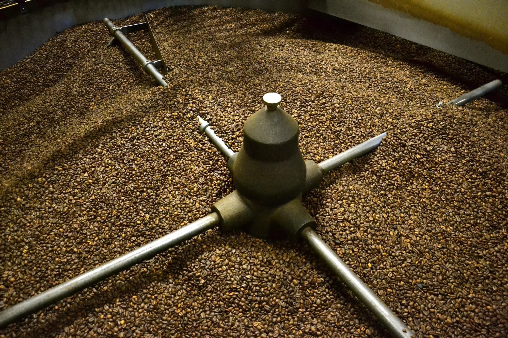

TORRÉFACTEUR DEPUIS 1928MÉO, LE CAFÉ
MÉO, LE CAFÉ
QU’IL ME FAUT.
Méo sélectionne les plus belles origines et les torréfie à Lille pour révéler leurs arômes. Découvrez le savoir-faire derrière chaque tasse.